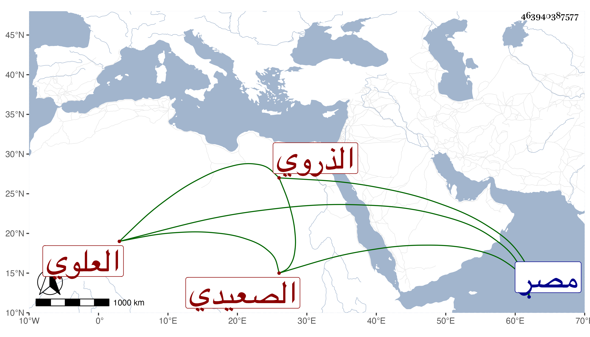

0902Sakhawi.DawLamic.ITO20230111-ara1.EIS1600.463940387577
Biography ID: 463940387577
686
عبد القادر بن أحمد بن محمد بن إبراهيم العلوي الذروي الصعيدي نزيل رواق الجبرت من جامع الأزهر ويعرف في بلده بابن نشوان . ممن قرأ البخاري ومسلم وغيرهما على الديمي واشتغل قليلا ، وقرأ عليه صغار المبتدئين في الفقه والفرائض والعربية مع كونه فيما يقال لا شيخ له وممن قال لي أنه قابل معه مكارم الأخلاق وكان يراجع فيما يلتبس الصحاح للجوهري فتح الله ، وهو فقير جدا لم يتأهل ولجماعة فيه اعتقاد وقد رأيته عرض عليه في سنة خمس وتسعين وفارقت مصر في التي بعدها وهو حي .
